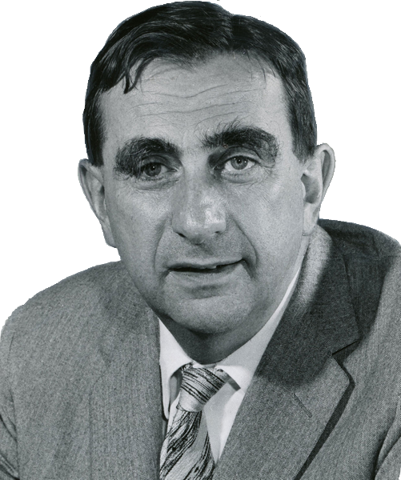

Teller Ede (angolosan: Edward Teller) magyar–amerikai atomfizikus, aki élete jelentős részét az Amerikai Egyesült Államokban élte le, és sikereit is főként ott érte el. [cite: 18]
Legismertebb a hidrogénbomba-kutatásokban való aktív részvétele, emiatt mint „a hidrogénbomba atyja” vált közismertté.
Bár zsidó vallású családban nőtt fel, később agnosztikussá vált.
Teller az Osztrák–Magyar Monarchiában született, Budapesten. Apja Teller Miksa, jó nevű ügyvéd. A négyéves Mellinger-féle elemi iskola elvégzése után szüleinek dönteniük kellett, hol tanuljon tovább. Két középiskolára is gondoltak: a pesti Piarista Gimnáziumra, de ott a tanulónak kereszténynek kellett lennie, és a Budapesti Ágostai Hitvallású Evangélikus Főgimnáziumra.
Tanulmányait 1917-ben a „Mintagimnáziumban” kezdte, ahol 1925-ben jeles eredménnyel érettségizett ugyanott, ahol többek között Neumann Jánossal, Szilárd Leóval és Wigner Jenővel is találkozhatott.
Azt vallotta később, hogy tudományos sikereit annak köszönheti, hogy a magyar nyelv az anyanyelve, máskülönben „csak középszintű középiskolai tanár” lett volna belőle. [cite: 28, 53]
A matematika iránt érdeklődött, de apja tanácsára a vegyészmérnökséget választotta. Beiratkozott a Királyi József Műegyetemre, de 1926-ban elhagyta az országot.
| Született | 1908. január 15. Budapest |
|---|---|
| Elhunyt | 2003. szeptember 9. Stanford, Kalifornia |
| Nemzetisége | magyar |
| Állampolgársága | magyar, amerikai |
| Foglalkozása | atomfizikus |
| Házastárs | Schütz-Harkányi Auguszta |